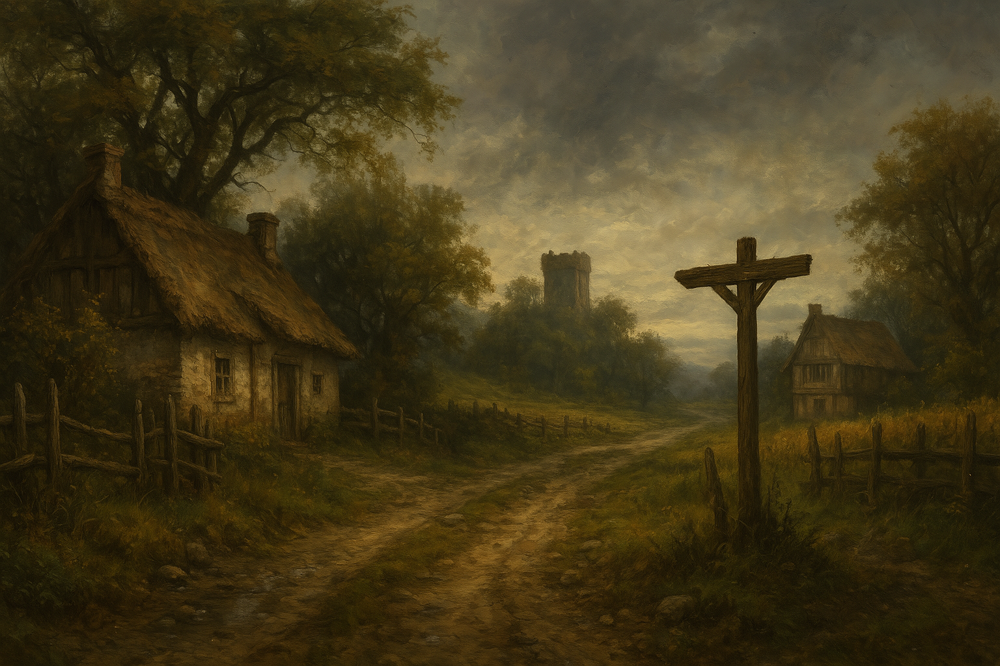

Chapter 1: The Spirit of Spring
Storm of Mudtown


Storm of Mudtown
15049.03.22
當馬車停下時，除了阿龍之外，大家都下車了。近鄉情怯可以說是阿龍最貼切的心情寫照。
赫洛登瀑布內的峭壁上，迎面而來的是一座看起來有點現代化的神殿。萊里向大家介紹，這是他的研究機構，同時也是風暴與智慧之神喬里森的神殿，名為「渡鴉中樞」，或是當地人習慣的稱法：「瀑布後面」。
當眾人走入渡鴉中樞一樓時，躲在鑰的推車上的阿龍心情又更不好了。眼前，一個熟悉的人影正在一樓櫃檯和服務人員交涉。那人是艾迪・蘋果木。大家疑惑著阿龍到底在扭捏什麼，阿龍則趕緊催促大家離開，萊里才把大家引導到後方的升降梯，到三樓的客房去放置行李。
大家簡單休息後，來到二樓準備見萊里。二樓是一座堂皇的教堂，此刻還沒有任何信徒朝拜。大家朝著內部走，推開了後方的門，便是萊里的研究室了。萊里先向大家說明自己的助理因為出差，暫時不在，不然應該是由他來帶大家進到土城去的。
接著，萊里簡單說明，要請冒險者們協助他搜集一項材料：「在被喬里森祝福過的河水中漂流的蘋果樹漂流木剪下的枝幹，長度需要有成年男子的前臂長，且不能有任何分枝」。在萊里的解釋下，冒險者才知道，搜集這個材料的目的，是為了製作一個能讓萊里回到T.I.D.E.S.的神秘器具（只流傳在像里奇蒙家族這種組織創始家族的歷史中）。萊里也承諾會給冒險者們每人 50 金幣作為獎賞。阿龍知道在土城，蘋果樹是由蘋果木家族管理的，絕對不能隨便亂砍，否則會有很嚴重的懲罰。
萊里也簡單介紹了一下關於土城的重要景點，如：城鎮外的海雅特山、流經城鎮中央的維爾河、城鎮的市中心軸恩廣場，以及太陽議會。萊里也說明，如果要去議會談重要的事，建議在他的助理回來後，正是登門拜訪。
接著萊里便要大家先進城，了解一下土城這個城鎮的生態。走到軸恩廣場，阿龍先看到了過去曾霸凌他的其中兩名年齡與他相仿的年輕人。同時，阿龍也向夥伴們說明了這群被當地人稱為「壞蛋四人幫」，被他簡稱為「壞四人」的霸凌們：喜愛勒索的葛林德爾、脾氣暴躁的湯博、骯髒惡臭的皮柏，以及破壞公物札菲。
一小列隊的人走向冒險者們。走在最前面的年輕女孩自我介紹為瑪莉貝爾，請冒險者們在明天的春天精靈投票投給他。列隊離開後，冒險者們向阿龍詢問關於這個「春天精靈」的投票，得知在瑪莉貝爾口中霸榜數年，名為潘妮洛普・蘋果木的女孩，是阿龍的舊識，甚至是他的初戀。而那名他們在渡鴉中樞看見的艾迪，則是佩妮的父親。
不久後，一群鬧哄哄、更大的隊伍出現在市中心，身旁還有不少奏樂聲，以及壞四人等人圍繞在旁。阿龍轉頭一看，隊伍最前面的人便是他思念已久的佩妮。此時，佩妮似乎也看見阿龍了，但因為周圍太嘈雜，加上隊伍不斷前行，阿龍只能看見佩妮的嘴型好像念著他的名字。
冒險者們迎頭趕上，停在佩妮前面。佩妮和鑰簡單說了幾句，佩妮也悄悄請他告訴阿龍今晚約在「咖啡廳」見面。
隊伍離開後，冒險者們決定先去太陽議會（上頭有著布條，寫著「謝謝太陽與河水，賜給我們小麥、蘋果和玉米！」），拜訪艾迪。因為知道土城的蘋果樹都是由蘋果木家族負責照料的，直接找大家長艾迪談談，似乎是最好的選擇（而且在冒險者們的認知中，阿龍與蘋果木家的佩妮關係似乎不錯，應該可以有較好的談判空間）。阿龍也想起土城的議會由被他暱稱為「蘋果先生」的蘋果木先生負責外交；「小麥先生」惠頓先生負責內政；「玉米小姐」康乃爾小姐負責娛樂–明日的春天精靈投票，便是由他負責。
然而，此時蘋果木先生並未在議會內，冒險者們只好在惠頓先生的招待下休息了一會兒後，便離開了。
推開太陽議會的大門，一名孩子出現在大家面前。阿龍一看，這是佩妮的弟弟，凱許・蘋果木，凱許正用他水汪汪的大眼睛看著阿龍。凱許與冒險者們一同離開議會後，便說了他來此行的目的。他要參與明天的春天精靈投票。依阿龍所知，參選春天精靈的條件是未成年的女子（就算是外地人也可以，因此冒險者們一開始也鼓吹毛毛參加），但凱許很顯然是個男孩子。不過過去的確是有男生扮裝成女生來參選，也被接受的案例。然而，這個一直以來把它當成大哥哥偶像來看待小弟，竟然也要參選，讓他感到大為震驚。凱許說道，他知道姊姊佩妮這三年來當春天精靈其實很辛苦，但他也知道擔任春天精靈可以為家裡得到的優勢太大，姊姊願意忍辱負重，繼續參選。較年輕個幾歲的凱許，希望能代替姊姊來參選，讓姊姊可以卸下重擔，同時又不會失去蘋果木家的優勢。阿龍有聽說，過去土城的妓院，很多是招募過去的春天精靈作為頭牌，雖然知道現在妓院產業已經沒落了，但他也知道沒選上春天精靈，似乎對佩妮來說也會有不太好的結果。冒險者們討論後，決定邀請凱許晚上也一起來咖啡廳，與佩妮一起商議。
接著冒險者們決定前往阿龍家拜訪。來到土城後，已經聽過不少人向阿龍提起，應該要去見見他父親的。但阿龍離開土城時，便是因為誤傷了自己的父親，因此內心難以面對。
經過「土堤學習中心」，阿龍也告訴其他夥伴，這是他以前上學的地方。然而冒險者們也很疑惑，怎麼上了學，阿龍還是個文盲？
來到家門前，冒險者們推著阿龍前去敲門，但阿龍敲了門就跑走了。最終阿龍終於鼓起勇氣。阿龍的媽媽看見自己的孩子終於回家了，露出慈祥的笑容，也歡迎阿龍的朋友們一起進來家裡。阿龍和夥伴們一起坐在沙發上，看著也在沙發上的阿龍爸爸，拄著拐杖，表情木然。
在阿龍媽媽煮了家常菜，端上客廳的桌子後，大家邊吃邊聊。阿龍對於自己誤傷爸爸這件事很感到愧疚，但還是問了爸爸他的傷勢。阿龍爸爸則回答他，他是爬山時不小心摔到腿，所以才拄著拐杖的。冒險者們也讀了拐杖上刻的字，上面寫著「願我的孩子出外冒險平安歸來」。
離開阿龍家後，阿龍先帶著大家到市區尋找裁縫店，希望能有一套正裝，以赴今晚和佩妮在咖啡廳的約。裁縫店老闆在收了阿龍額外的錢後，要他在日落前再來拿衣服。
接著，大家回了一趟渡鴉中樞，碰巧遇上出差回來的萊里的助手，綠先生，大家也和他打了招呼，了解平常都是綠先生到土城內和議會人員溝通。明日的春天精靈投票，也將是他會協助執行。
冒險者們趁著下午的時間，往山邊去，來到農地區。他們盤算著該如何才能成功採集到萊里要求的蘋果木，卻被負責栽種與守衛農田的農人們發現。冒險者們也得知海雅特山上似乎有一群山賊。在密謀竄到農田內的計畫失敗後，冒險者們只能先慢慢回到市區，做別的計劃。
時間差不多，大家在陪阿龍拿完他的衣服（一套帥氣的西裝，以及一個紅色的小領結，穿在阿龍身上十分帥氣）後，便一併前往當地人習慣簡稱「咖啡廳」的波德里克咖啡廳。
在咖啡廳前，大家看見凱許和佩妮兩人似乎起了點口角，得知佩妮並不知道凱許今晚也要一起來咖啡廳。他們兩人先後進到咖啡廳後，冒險者們才進入。在服務生的引導下，阿龍走入了咖啡廳後頭最右手邊的包廂，而其他冒險者們則與已經入座的凱許共用兩張桌子。
包廂內，青春而亮麗的佩妮與阿龍思念的模樣別無二致。阿龍在談話過程中得知了關於「春天精靈」投票的不少內幕。土城的居民每戶每個月都需要上繳 10% 的收入或農作物給海雅特山的山賊，而春天精靈的家庭則可以免除此項規則，因此有很多家庭為了這個好處，紛紛推舉自己家的孩子去參選。然而，不為其他人所知的，春天精靈在被選上後，會被議會的玉米小姐以一個法器在肩膀上印上一個被稱為「翠綠印記」的標記，而且每個月要在印記發痛時被玉米小姐帶去見山賊一次。依照玉米小姐的說法，翠綠印記只有辦法印在女生身上，因此要是凱許以男兒身被選上春天精靈，也是無法履行春天精靈的義務的。
阿龍聽了感到恐慌。山賊，是真的存在的。而在佩妮的訴說下，他得知這個翠綠印記，是山賊首領奧斯華・克雷頓拿來執行用來控制自己山賊手下的儀式所用。他也威脅，如果不每月執行儀式，山賊們會控制不了自己燒殺擄掠的衝動，下山把土城給滅了。
然而，在佩妮口中，他每個月上山去，這個被他稱為大奧斯的山賊首領其實對他挺好、挺溫柔的，也不會傷害他。他認為自己是愛上大奧斯了。另阿龍更心痛的是，佩妮覺得自己在大奧斯身上看見了很多與阿龍相似之處：壯碩寬闊的肩膀，善良的本質，以及總是為人著想的心。佩妮說他試著說服大奧斯和他私奔，兩人一起逃離這個無法改變的命運，但大奧斯為了自己的群落，割捨不下，讓佩妮也不知道該怎麼辦。阿龍看著餐前點的蘋果汁，不知怎麼喝下，只能衝出包廂外跑進廁所，對著鏡子就是一陣猛搥。
包廂外，冒險者們問著凱許關於春天精靈的事，卻發現他除了姊姊佩妮一個月會消失一兩天以外，什麼都不知道。而對於隔天的春天精靈投票，凱許除了求冒險者外，根本沒有別的對策。雷亞過了一段時間，決定去廁所變身成蒼蠅，飛入阿龍和佩妮的包廂，試圖竊聽，然而，此時正好是阿龍衝出包廂外跑去廁所的時間，因此雷亞什麼都沒聽到。
阿龍走出廁所，來到凱許和其他冒險者們的桌子，將領結扯掉，喊了幾聲生氣的話，口中說著什麼討山賊之類的，甚至還想出了以討伐山賊來和議會談判，做為拿蘋果木的交換條件。其他人對於阿龍突然吐出這麼多資訊，還腦袋清楚到這種程度，大感意外。不久後包廂傳出了佩妮的尖叫聲。
冒險者們一同衝了過去，發現雷亞躺在佩妮面前的桌上。原來是佩妮看見桌上有隻蒼蠅，順手揮過去，雷亞來不及躲開，一被打到便變回原形，嚇著了佩妮。
冒險者們也順理成章全部進了包廂。大家與蘋果木姊弟一同將已知的資訊統整，並在佩妮的提議下，在明天選完春天精靈後，後天應該可以一起上山去見山賊。依照佩妮的計算，沒意外後天應該會是他的印記發痛的日期。
冒險者們先讓蘋果木姊弟回家去，也接了阿龍的父母來到渡鴉中樞過夜。接著冒險者們便回到渡鴉中樞二樓萊里的辦公室，與萊里和綠先生稟報他們的計劃。
冒險者們回到三樓，準備就寢。原本想和阿龍的父母聊聊天，鑰卻發現阿龍父母對阿龍的管教方式似乎有很大的問題—不知道這是阿龍父母的問題，還是地侏的文化就是如此？因此鑰和毛毛便到阿龍的房間安慰阿龍了。同一時間，雷亞帶著羅羅（將羅羅綁在他身上）到附近的樹林走走，想摘採幾顆水果送給阿龍。雷亞也在樹林中感受到涅西斯的光輝，似乎自己離涅西斯有那麼近了一點。然而好不容易找到的兩顆果實，其中一顆在雷亞冥想時被羅羅吃掉了，只剩下一顆能帶給阿龍。
15049.03.23
一早起床後，大家一起到二樓辦公室去找萊里和綠先生，簡單吃了他們為冒險者們準備的麵包作為早餐。綠先生表示他接下來會先準備等等的春天精靈投票—他負責擔任公正第三方的監票人。
冒險者們決定在投票前剩餘的一兩個小時，先去拜訪蘋果木家。艾迪和此時已經離開家裡，前往議會，準備投票的工作了；佩妮則早已和他的遊行隊伍們在廣場繞境了。因此冒險者們決定也前往議會去。
到了議會，綠先生還沒抵達前，議會的休息區只有三名代表。和議會簡單溝通後，冒險者們確認了「山賊」確實存在，也得知了這群山賊團體有個響亮的稱號：海雅特山交響樂。他們也得知被稱為玉米小姐的康妮・康乃爾，他負責的各種「傳統」，都是傳承下來的，稍微減低了冒險者們對他的敵意。不過，冒險者們也從康妮口中得知，給春天精靈用的翠綠印記，似乎和春天精靈體內的月經週期有很大的關係，因此他們也更清楚知道原本想參選的凱許，是不可能被選上的了。
玉米小姐和小麥先生先暫時離開，留下冒險者們與艾迪私下談談。冒險者們提議上山剿匪，以和艾迪換取萊里請他們尋找的蘋果木枝幹。除此之外，也會給他們等同於居民人數的金幣作為報酬。艾迪對提議沒有太大的反彈，但請冒險者們在投票後，再去找他，他得先和議會成員們討論出個結果。
離開了議會，冒險者們先前往投票場地。他們正好碰上佩妮的隊伍，浩浩蕩蕩，佩妮也特別和阿龍打了個招呼。情緒複雜的阿龍不知道該擺什麼表情。冒險者們在投票前也找到了他們前一天遇到的另一名春天精靈候選人：瑪莉貝爾。瑪莉貝爾很清楚知道自己沒什麼勝算，但還是堅持想選下去。基於大家對佩妮傷了阿龍的心，冒險者們決定要幫瑪莉貝爾一把，瑪莉貝爾也感謝了冒險者們，承諾他們不管投票結果如何，今晚都要請他們吃一餐。
時間到了，議會的康妮和綠先生先生一同站上了舞台。康妮簡單說明了本次投票的方式：每個人都會到台前領取選票，並在另一張紙上簽名，以示自己已領票，接著在選票上寫上自己中意的春天精靈人選，投入箱中。接著康妮介紹了本次春天精靈的候選人：蟬聯三年的現役春天精靈佩妮・蘋果木，以及他的競爭對手瑪莉貝爾・莫德維克。兩者的氣勢差距極為明顯，除了冒險者們外，很顯然瑪莉貝爾沒有任何的支持者。冒險者們也發現，佩妮稍微有些身體不適的症狀，再次提醒他們從康妮那兒聽到與翠綠印記，和月經週期有很大的關聯。他們也想起前一晚佩妮提到又快上山了這句話。
開票的結果，佩妮拿了一百多票，瑪莉貝爾則只拿了6票，除此之外還有20票以上的廢票。瑪莉貝爾輸的心甘情願，雖有不甘，但也無可奈何。在康妮的主持下，佩妮欽點了自己的春天騎士團：阿龍口中的「壞四人」，以及「阿龍和他的朋友們」。
隨著春天精靈的投票結束，土城的居民們熱烈慶祝著。冒險者們聽見康妮宣布今晚午夜，佩妮就要以春天精靈的身份，在春天精靈的護送下，前往海雅特山去一趟。想著要和壞四人一起行動，冒險者們不禁感到身體不適。
想著壞四人，冒險者們就聞到惡臭的皮柏。冒險者們試圖幫他清洗，土城的居民們在狂歡的氣氛下，也跟著起鬨。大家一同把皮柏丟到穿越廣場的維爾河內，強迫皮柏搓洗身體。在快半小時的時間後，皮柏的身體已被洗得視覺上完全看不出髒污，但走出河後，身上的惡臭卻還是讓人感到暈眩。這場鬧劇居民們也看夠了，也就離開了。
冒險者們在附近看見一個人的瑪莉貝爾，和他搭訕。瑪莉貝爾很感激他們為他投下的票，也邀請他們一起到他家去，他要做午餐給大家吃。
冒險者們發現瑪莉貝爾獨自一人住在家裡，家裡的狀況看起來挺不錯的，雖然稱不上豪華，但裡面的擺設和書籍都十分有品味。瑪莉貝爾表示自己的父母外出旅行兩年了，至今尚未歸來，但也讓他練就了可以好好照料自己的各種生活技能。鑰和毛毛發現瑪莉貝爾的書籍十分多樣，瑪莉貝爾也表示自己平常就是以閱讀為樂，什麼都看。抽出其中一本，竟然是與克里歐門王國的科技發展史有關，而且內容是用矮人與寫的。鑰大力邀請瑪莉貝爾去他陸上的藏書處拜訪他，但瑪莉貝爾表示希望先把自己還沒看完的書看完，才有想出去旅行的心。
菜色擺上桌，冒險者們發現瑪莉貝爾的廚藝也極佳。瑪莉貝爾要冒險者們先吃，自己會陸續上更多菜，但冒險者們不忍心，要等他一起用餐。餐桌上，冒險者得知瑪莉貝爾其實聰明勇敢，又十分有獨立思考的能力。瑪莉貝爾對於山賊的事也略有耳聞，也可以猜想到春天精靈和山賊的是脫不了關係。他期望如果能選上春天精靈，有機會可以上山去和山賊們進行談判，找出對山賊和土城都有利的解方。然而，明年他就成年了，不符合參選春天精靈的資格，因此這個願望就只能隨風而去了。
對於如此讓人心疼的瑪莉貝爾，冒險者們想方設法想邀請他加入冒險團隊，認為他一定也會喜歡一起冒險的生活，但瑪莉貝爾很顯然沒有共同的想法。
午餐後，冒險者們前去拜訪太陽議會。艾迪表示他和議會達成了共識，願意以冒險者們剿除山賊為條件，給予他們包含他們要的蘋果木枝幹。除此之外，也會給他們等同於居民人數的金幣作為報酬。
15049.03.22
When the carriage came to a stop, everyone got out except Al-lon. If anything could describe how he felt, it was homesickness mixed with dread.
Set into the cliff within Heloden Falls was a temple that looked strangely modern. Riley introduced it as her research institute, as well as a temple to Jeorisan, god of storms and wisdom. Its formal name was the Raven Nexus, though locals were used to calling it simply "Behind the Fall."
When the group entered the first floor of the Raven Nexus, Al-lon, still hiding in Kaname's cart, felt even worse. Right in front of them, a familiar figure was speaking with the front-desk staff. It was Addie Applewood. The others wondered what exactly Al-lon was being so awkward about, but he hurriedly urged them to leave, and Riley led everyone to the elevator in the back and up to the guest rooms on the third floor to put down their luggage.
After a short rest, they went to the second floor to see Riley. The second floor was a magnificent chapel, though there were no worshippers present at the moment. The group walked deeper inside, pushed open the door at the back, and found Riley's study beyond it. Riley first explained that her assistant was currently away on business; otherwise, he should have been the one guiding them into Mudtown.
Riley then briefly explained the material she wanted the adventurers to help collect: "A branch cut from driftwood of an apple tree that floated in river water blessed by Jeorisan. It must be as long as an adult man's forearm and have no offshoot branches." From Riley's explanation, the adventurers learned that the purpose of gathering this material was to craft a mysterious device that could allow Riley to return to T.I.D.E.S., something preserved only in the histories of founding families like the Richmonds. Riley also promised each adventurer fifty gold pieces as a reward. Al-lon knew that in Mudtown, apple trees were managed by the Applewood family, and chopping them carelessly was absolutely forbidden and carried severe punishment.
Riley also gave them a simple introduction to the important landmarks of Mudtown, such as Mount Hyatt outside town, the Vay-El River that ran through the center of town, the central Zoan Plaza, and the Council of Sols. Riley added that if they wanted to speak to the council about anything important, it would be best to pay a formal visit after her assistant returned.
Riley then told them to head into town first and get a sense of Mudtown's general atmosphere. Upon reaching Zoan Plaza, Al-lon immediately spotted two young men around his age who had bullied him in the past. He also explained to his companions that these bullies, known locally as the "Four Bad Guys," and shortened by him to the "Evil Be-4," consisted of Grindle the extortionist, hot-tempered Tumble, filthy and foul-smelling Pibble, and Zaffie the vandal.
A small procession approached the adventurers. At the front was a young girl who introduced herself as Maribel and asked the adventurers to vote for her in tomorrow's Spring Spirit election. After the procession moved on, the adventurers asked Al-lon about this "Spring Spirit" vote, and learned that the girl who had dominated the title for several years, Penelope Applewood, was someone Al-lon had known for a long time and even his first love. The Addie they had seen earlier at the Raven Nexus was Penny's father.
Not long afterward, a larger and far noisier procession appeared in the town center, accompanied by music and surrounded by the Evil Be-4 and others. When Al-lon turned to look, he saw that the person leading the procession was Penny, the one he had missed for so long. Penny seemed to spot Al-lon too, but because the surroundings were so noisy and the procession kept moving, all he could make out was that her lips seemed to be forming his name.
The adventurers hurried ahead and stopped in front of Penny. Penny exchanged a few words with Kaname and quietly asked her to tell Al-lon to meet her tonight at "the cafe."
After the procession left, the adventurers decided to first visit Addie at the Council of Sols, where a banner overhead read, "Thank the sun and the river for granting us wheat, apples, and corn!" Since they knew that all the apple trees in Mudtown were cared for by the Applewood family, going directly to the family patriarch Addie seemed like the best option. In the adventurers' minds, Al-lon and Penny seemed to be on fairly good terms, so that might create more room for negotiation. Al-lon also remembered that Mudtown's council handled foreign affairs through Mr. Applewood, whom he nicknamed "Apple Mister"; domestic affairs through Mr. Wheaton, whom he called "Wheat Mister"; and entertainment through Miss Cornell, "Corn Miss," who was also in charge of tomorrow's Spring Spirit election.
However, Mr. Applewood was not at the council at that moment, so after resting for a while under Mr. Wheaton's hospitality, the adventurers left.
As they pushed open the doors of the Council of Sols, a child appeared in front of them. Al-lon immediately recognized him as Penny's younger brother, Cassius Applewood. Cash gazed up at Al-lon with watery eyes. After leaving the council together with the adventurers, Cash explained why he had come. He wanted to take part in tomorrow's Spring Spirit election. As Al-lon understood it, the qualification for being a Spring Spirit candidate was being an underage girl, even an outsider could qualify, which was why the adventurers had initially joked about having Fur enter. But Cash was very obviously a boy. Still, there had apparently been past cases where boys dressed as girls and were accepted as candidates. Even so, the fact that this younger boy, who had always seen Al-lon as an older-brother idol, also wanted to run left Al-lon deeply shocked. Cash explained that he knew his sister Penny had suffered a great deal these past three years as Spring Spirit, but he also knew that the advantages it brought to their family were enormous, which was why his sister had endured the humiliation and kept running. Younger by several years, Cash hoped to take her place so she could lay down that burden without the Applewood family losing its advantages. Al-lon had heard that in the past, many of Mudtown's brothels recruited former Spring Spirits as their headliners. Although he knew that industry had now declined, he also knew that losing the Spring Spirit election did not seem likely to lead Penny anywhere good either. After discussing it, the adventurers decided to invite Cash to the cafe that evening as well, so they could talk things over together with Penny.
After that, the adventurers decided to visit Al-lon's home. Ever since arriving in Mudtown, plenty of people had told Al-lon that he ought to see his father. But when Al-lon left Mudtown, it had been because he had accidentally injured his father, so he found the idea extremely hard to face.
Passing by the Tutty Learning Center, Al-lon told the others that it was the school he had once attended. The adventurers could not help wondering how he could still be illiterate after having gone to school there.
When they reached his front door, the adventurers pushed Al-lon up to knock, but after knocking he immediately ran away. In the end, though, he finally gathered his courage. When Al-lon's mother saw that her child had finally come home, she smiled kindly and welcomed Al-lon's friends inside as well. Al-lon sat down on the sofa with his companions, facing his father, who was also seated there with a cane and a blank expression.
After Al-lon's mother cooked a home-style meal and brought it out to the living room table, everyone chatted while they ate. Al-lon felt deeply guilty about accidentally injuring his father, but still asked him about his leg. His father answered that he had hurt it by accidentally falling while climbing a mountain, which was why he used a cane. The adventurers also read the words carved into the cane: "May my child return safely from adventures abroad."
After leaving Al-lon's house, he first took everyone into town to look for a tailor. He hoped to get a proper outfit for tonight's date with Penny at the cafe. After taking some extra money from Al-lon, the tailor told him to come back before sunset to collect the clothes.
Next, the group returned to the Raven Nexus and happened to run into Riley's assistant, Mr. Green, who had just come back from his trip. They greeted him and learned that it was usually Mr. Green who went into Mudtown to communicate with the council members. He would also be helping oversee tomorrow's Spring Spirit election.
Taking advantage of the afternoon, the adventurers headed toward the mountains and reached the farmland district. They began plotting how they might successfully gather the Applewood branch Riley needed, only to be spotted by the farmers responsible for planting and guarding the fields. The adventurers also learned that there seemed to be a group of bandits on Mount Hyatt. After their scheme to sneak into the fields failed, they could only slowly head back into town and make other plans.
Once the time was about right, and after accompanying Al-lon to pick up his clothes, a handsome suit with a small red bow tie that looked very dashing on him, they all headed together to Podrick's Cafe, which locals simply referred to as "the cafe."
Outside the cafe, they saw that Cash and Penny seemed to be having an argument, and learned that Penny had not known Cash was coming to the cafe that night as well. After the two of them went inside one after the other, the adventurers entered too. Guided by a server, Al-lon was led into the booth at the far right in the back of the cafe, while the other adventurers shared two tables with Cash, who was already seated.
Inside the booth, the youthful and radiant Penny looked exactly as Al-lon had remembered. As they talked, Al-lon learned quite a bit of hidden truth about the Spring Spirit election. Each household in Mudtown had to pay ten percent of its income or crops every month to the bandits of Mount Hyatt, but the family of the Spring Spirit was exempt from this rule. Because of that, many families pushed their own children to run for the role. What others did not know was that after being chosen, the Spring Spirit would be branded on the shoulder by Corn Miss of the council using a magical artifact with a mark called the Mark of Verdant, and once each month, when the mark began to ache, Corn Miss would bring the Spring Spirit to meet the bandits. According to Corn Miss, the Mark of Verdant could only be placed on girls, so even if Cash were somehow elected as Spring Spirit while remaining male, he would not be able to fulfill the role's obligations.
Al-lon was horrified to hear this. The bandits were real. From Penny's account, he learned that this Mark of Verdant was part of a ritual used by the bandit leader Oswald Creighton to control his own followers. Oswald had also threatened that if the ritual were not carried out every month, the bandits would lose control of their urges to burn, kill, and plunder, and would come down to wipe Mudtown out.
Yet according to Penny, every month when she went up the mountain, this bandit leader she called Big Os was actually kind and gentle to her and never harmed her. She believed that she had fallen in love with Big Os. What hurt Al-lon even more was hearing Penny say that she saw many similarities between Big Os and Al-lon: broad powerful shoulders, a good heart, and a nature that always thought of others. Penny said she had tried to persuade Big Os to run away with her so the two of them could escape this unchangeable fate together, but Big Os could not abandon his people, leaving Penny at a loss for what to do. Staring at the apple juice he had ordered before the meal, Al-lon found he could not bring himself to drink it. Instead, he bolted from the booth to the bathroom and pounded furiously at the mirror.
Outside the booth, the adventurers asked Cash about the Spring Spirit, only to discover that apart from noticing that his sister Penny disappeared for a day or two every month, he knew nothing. As for the next day's Spring Spirit election, Cash had no plan at all besides begging the adventurers for help. After some time, Leah decided to turn into a fly in the bathroom and fly into Al-lon and Penny's booth to eavesdrop. However, this happened to be exactly when Al-lon burst out of the booth and ran to the bathroom, so Leah ended up hearing nothing.
When Al-lon came out of the bathroom and returned to the table with Cash and the other adventurers, he tore off his bow tie, shouted several angry things, and started ranting about wiping out the bandits. He even came up with the idea of negotiating with the council by offering to eliminate the bandits in exchange for the Applewood branch they needed. The others were stunned that Al-lon had suddenly spilled so much information and was thinking this clearly. Not long after, Penny's scream rang out from the booth.
The adventurers rushed over together and found Leah lying on the table in front of Penny. It turned out Penny had seen a fly on the table and casually swatted at it. Leah had not been able to dodge in time, and the moment she was hit, she reverted to her true form, terrifying Penny.
This naturally led to all of the adventurers entering the booth as well. Together with the Applewood siblings, they gathered all the information they knew so far, and at Penny's suggestion, decided that after tomorrow's Spring Spirit election, they should be able to go up the mountain together the day after that to meet the bandits. By Penny's calculation, barring any surprises, that should be the next time her mark started to ache.
The adventurers first sent the Applewood siblings home, and also brought Al-lon's parents to the Raven Nexus to stay the night. Afterward, the adventurers returned to Riley's office on the second floor of the Raven Nexus and reported their plan to Riley and Mr. Green.
The adventurers returned to the third floor and prepared for bed. Kaname had originally wanted to chat with Al-lon's parents, but she quickly realized that their way of raising Al-lon seemed seriously flawed. She could not tell whether the problem was with his parents specifically or whether earth gnome culture was simply like that. So Kaname and Fur went to Al-lon's room to comfort him. At the same time, Leah took Roel, literally tying Roel to herself, for a walk in the nearby woods to pick some fruit to give Al-lon. In the forest, Leah also felt the radiance of Necis, as though she had come slightly closer to the god. Yet of the two fruits they finally managed to find, Roel ate one while Leah was meditating, leaving only a single fruit to bring back to Al-lon.
15049.03.23
After waking early, everyone went together to the office on the second floor to see Riley and Mr. Green, and had the simple bread they had prepared for the adventurers as breakfast. Mr. Green said he would next go prepare for the Spring Spirit election, where he would serve as the neutral third-party vote supervisor.
The adventurers decided that during the hour or two remaining before the election, they would first visit the Applewood family. Addie had already left home and gone to the council to prepare for the voting, while Penny had long since set out with her parade through the plaza. So the adventurers decided to head to the council as well.
When they arrived, before Mr. Green had shown up, only three representatives were in the council's waiting area. After a brief discussion with them, the adventurers confirmed that the "bandits" were indeed real, and learned that this bandit group had an impressive name: the Mount Hyatt Symphony. They also learned that Connie Cornell, known as Corn Miss, handled all these various "traditions," and that they were inherited customs, which slightly reduced the adventurers' hostility toward her. However, from Connie they also learned that the Mark of Verdant used on the Spring Spirit seemed closely tied to the Spring Spirit's menstrual cycle, which made it even clearer that Cash, whom they had hoped might run, could never actually be chosen.
Corn Miss and Wheat Mister temporarily stepped away, leaving the adventurers to speak privately with Addie. The adventurers proposed going up the mountain to wipe out the bandits in exchange for the Applewood branch Riley had asked them to find. On top of that, they would also receive gold equal in amount to the town's population. Addie did not strongly object to the proposal, but asked the adventurers to come find him again after the vote, because he needed to discuss the outcome with the other council members first.
After leaving the council, the adventurers headed to the voting grounds. They happened to run into Penny's grand procession, and Penny made a point of greeting Al-lon. Torn by complicated emotions, Al-lon had no idea what expression he ought to wear. Before the voting began, the adventurers also found the other Spring Spirit candidate they had met the day before: Maribel. Maribel clearly knew she had almost no chance of winning, but still insisted on running. Because everyone felt Penny had broken Al-lon's heart, the adventurers decided to help Maribel out. Maribel thanked them and promised that regardless of the election result, she would treat them to a meal that night.
When the time came, Connie and Mr. Green stepped onto the stage together. Connie briefly explained the voting procedure: each person would come up to receive a ballot, sign a separate sheet to confirm they had received one, then write down their chosen Spring Spirit candidate on the ballot and place it in the box. Connie then introduced the candidates: the three-time reigning Spring Spirit Penny Applewood, and her challenger Maribel Muddlewick. The difference in momentum between the two was overwhelming. Aside from the adventurers, Maribel quite obviously had no supporters at all. The adventurers also noticed that Penny looked slightly unwell, reminding them again of what they had heard from Connie about the Mark of Verdant's strong connection to the menstrual cycle. They also remembered Penny's comment from the previous night that she would soon have to go up the mountain again.
When the votes were counted, Penny had received over a hundred, while Maribel got only six. There were also more than twenty invalid ballots. Maribel accepted her loss with grace. Though naturally disappointed, there was nothing she could do. Under Connie's direction, Penny named her own Spring Knight retinue: the "Evil Be-4," as Al-lon called them, and "Al-lon and his friends."
As the Spring Spirit election came to an end, the people of Mudtown celebrated enthusiastically. The adventurers heard Connie announce that at midnight tonight, Penny would go to Mount Hyatt in her role as Spring Spirit, escorted by the Spring Knights. The thought of having to act alongside the Evil Be-4 made the adventurers feel physically ill.
Thinking of the Evil Be-4 brought Pibble's stench to mind, or rather directly to their noses. The adventurers tried to wash him clean, and the people of Mudtown, swept up in the celebratory mood, joined in the commotion. Together they threw Pibble into the Vay-El River that ran through the plaza and forced him to scrub himself. After nearly half an hour, Pibble looked visually spotless, but once he stepped back out of the river, the foul stench clinging to him was still dizzying. The townsfolk eventually grew tired of the farce and drifted away.
Nearby, the adventurers spotted Maribel alone and struck up a conversation. Maribel was very grateful for the votes they had cast for her and invited them all to her home, saying she would cook lunch for everyone.
The adventurers discovered that Maribel lived alone in a rather nice house. It was not luxurious, but its furnishings and books were all tasteful. Maribel explained that her parents had been away traveling for two years and still had not returned, but that had also forced her to develop all the practical skills needed to take care of herself. Kaname and Fur noticed that Maribel's books covered a wide variety of subjects, and Maribel said that reading was simply what she loved to do, and that she read almost anything. When they pulled one book from the shelf, it turned out to be about the history of technological development in the Kingdom of Cliomen, and it was even written in Dwarvish. Kaname strongly invited Maribel to visit her land-based book collection someday, but Maribel said she first wanted to finish reading the books she still had before she would feel like traveling.
When the food was set on the table, the adventurers discovered that Maribel was also an excellent cook. She told them to begin eating and said she would keep bringing out more dishes, but the adventurers felt bad and wanted to wait until she could sit down and eat with them. At the table, they learned that Maribel was actually clever, brave, and very capable of independent thought. She had also heard a little about the bandits, and could already guess that the Spring Spirit and the bandits were deeply connected. If she had been chosen Spring Spirit, she had hoped she might have had the chance to go up the mountain and negotiate with the bandits, and find a solution that would benefit both them and Mudtown. But next year she would come of age and no longer qualify to run for Spring Spirit, so that wish would simply have to drift away on the wind.
The adventurers felt so sorry for Maribel that they tried all kinds of ways to invite her to join their adventuring party, convinced that she would enjoy the adventuring life as well. Maribel, however, clearly did not share that idea.
After lunch, the adventurers went to visit the Council of Sols. Addie said that he and the council had reached an agreement: if the adventurers would eliminate the bandits, the council would give them the Applewood branch they needed, along with a reward in gold equal to the town's population.